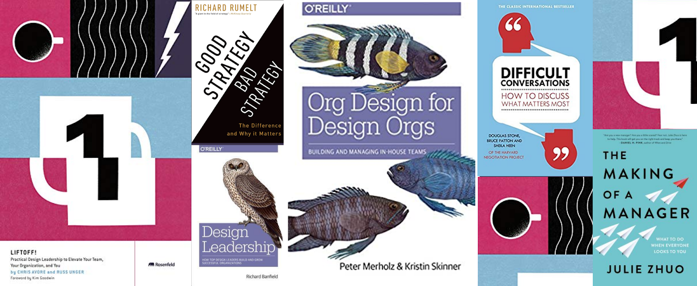

Книги, которые будут полезны для руководителей в области дизайна новых продуктов.
С ростом количества стартапов во всем мире старшие и главные дизайнеры начинают занимать руководящие должности. Это одновременно и непривычно, и страшно. Стартапы нуждаются в хороших специалистах больше, чем крупные компании. Молодые компании пытаются заманить первоклассных профессионалов и предлагают им такие возможности и преимущества, которые недоступны большим корпорациям.
Но, к сожалению, начинающие менеджеры не проходят формального обучения тому, как стать хорошими управленцами. И это хуже всего как для самих руководителей, так и для всей организации, потому что они не знают, как выполнять свои обязанности должным образом. Где-то в глубине души они все еще чувствуют себя дизайнерами. Чтение специализированной литературы, опросы руководителей в Twitter и планирование сессий наставничества через ADPList или LinkedIn — это некоторые способы противостоять сомнениям начинающих руководителей.
Одной из самых рекомендуемых книг в этой сфере является руководство автора Джули Чжуо под названием «Создание менеджера». Автор статьи считает книгу «Дизайн привычных вещей» полезной для начинающих управленцев. Но помимо этого, есть еще несколько пособий, которые могут стать вдохновением для молодых руководителей в сфере дизайна. Ниже мы рассмотрим те, которые могут им понравиться:
Liftoff!: Practical Design Leadership to Elevate Your Team, Your Organization, and You
Авторы: Chris Avore & Russ Unger
Эта книга представляет собой руководство о том, как дизайн-менеджеру и руководителю повысить свой профессиональный уровень, что актуально для любой организационной иерархии. В ней применяется подход, основанный на опыте дизайнеров, которые делятся им со своими коллегами. Эта книга будет полезна для поиска и найма специалистов, масштабирования команды, развития карьеры и понимания того, почему разнообразие имеет важное значение для бизнеса. С ее помощью компания сможет укрепить роль дизайна в своем бизнесе и узнать о практиках его масштабирования через руководителя. Это гайд о том, как вывести команду или компанию на новый уровень.
Рецензия на книгу Liftoff! на GoodreadsХорошая стратегия, плохая стратегия. В чем отличие и почему это важно
Автор: Ричард Румелт
Эта книга простым языком объясняет суть стратегии. Вам потребуется разработать стратегию и действовать в соответствии с ней, независимо от того, на каком этапе карьеры вы находитесь, или какая у вас профессия. Рекомендации применимы для бизнеса, политики и других направлений деятельности. Кроме того, цель книги заключается в том, чтобы провести грань между стратегией и другими, связанными с ней и одновременно сбивающими с толку, аспектами: надеждами, видениями и экономическими целями. Далее автор объясняет, что хорошая стратегия фокусируется на проблемах, с которыми сталкивается бизнес, и предоставляет ряд содержательных предложений для их решения. Здесь следует отметить, что автор этой книги был первым человеком, который проделал превосходную работу и на базе статистических данных провел связь между корпоративным подходом и прибыльностью.
«Самая важная обязанность лидера состоит в том, чтобы определить крупные проблемы, которые мешают движению вперед и разработать последовательный подход к их решению».
Рецензия на книгу «Хорошая стратегия, плохая стратегия» на GoodreadsЛидеры продукта. Как лучшие в мире продакт-менеджеры создают команды и запускают крутые продукты
Автор: Ричард Бэнфилд
Эта книга познакомит вас с тем, что значит управлять дизайнерами в компании, студии или команде. Люди могут относиться к руководителям с уважением и предполагать, что у них есть ответы на любые вопросы, но, они, как и все мы, изо дня в день сталкиваются с новыми проблемами и ищут пути их решения. Эта содержательная книга исследует стиль управления первоклассных лидеров дизайна, покажет направление будущим руководителям, раскроет стратегии и тактики, о которых не рассказывают менеджеры ведущих дизайнерских компаний США. Автор потратил много времени на собеседования с лучшими управленцами в этой области, которые работают в топовых студиях, и изучение их методов работы. Он использовал примеры, чтобы проиллюстрировать различные сценарии, с которыми они сталкивались.
Вот некоторые из вопросов, на которые читатели найдут ответы в этой книге:
- Как лидер дизайна создает здоровую корпоративную культуру?
- Некоторые из инновационных подходов к привлечению и развитию талантливых дизайнеров
- Создание плодотворного рабочего пространства и управление удаленными сотрудниками
- Как оставаться в курсе нужд и требований и при этом находить баланс между работой и личными потребностями
- Как связаны между собой различные лидерские качества
- Методы и стратегии для поддержания эффективного рабочего процесса
- Тактика и планирование в отношении работы над будущим дизайн-проектом, а также функции руководителя в сфере дизайна
- Некоторые из ошибок, которые допускали лидеры дизайна в прошлом, и способы их устранения.
«К сожалению, многие компании при приеме на работу опираются на хард-скиллы руководителей, что тормозит развитие командной культуры. …Найдите замотивированных людей, которые увлечены своей работой. Хорошие дизайнеры могут научиться специальным навыкам управления».
Рецензия на книгу "Лидерство в дизайне" на GoodreadsOrg Design for Design Orgs: Building and Managing In-House Design Teams
Авторы: Кристин Скиннер и Питер Мерхольц
В этой книге говорится о том, как со временем дизайн стал важнейшим звеном между пользователями и их сложным, быстро развивающимся цифровым опытом и потребностями. Неудивительно, что все больше дизайнеров участвуют в стратегических обсуждениях продуктов и услуг, которые крупные организации в конечном итоге предоставляют своим клиентам. Эта книга поможет руководителям в сфере дизайна создавать собственные команды. В ней есть рекомендации о том, как преуспеть в работе и продвигать дизайнеров по карьерной лестнице, а также получать максимальную отдачу от инвестиций компании. Книга представляет собой гайд, который поможет вам узнать о закулисье создания ведущих дизайнерских команд в компании и способах использования дизайна в качестве стратегической точки обзора.
Хотя эта книга в основном вращается вокруг темы создания и управления внутренними командами дизайнеров, она также поможет вам в обнаружении следующих проблем:
- Как и почему в эпоху цифровых технологий изменилась роль дизайна? Роль дизайнерских команд и их эволюция
- Каким образом руководители могут создать цифровой продукт для бизнеса с помощью дизайна?
- Двенадцать отличительных особенностей быстроразвивающихся, реальных команд дизайнеров в организациях
- Как руководитель в сфере дизайна может организовать свои команды посредством объединения их в единое сообщество
- Секретные приемы подбора и найма дизайнеров
- Мероприятия по руководству командой дизайнеров и поддержке профессионального роста
«Дизайнерам не нравится видеть некачественную работу команды, поэтому они могут вмешиваться в попытке улучшить ее. К сожалению, их благие намерения могут дать обратный эффект и привести к плохо сформулированным проектным решениям, которые замедляют работу или не добавляют ей ценности».
Рецензия на книгу Org Design for Design Orgs на GoodreadsНеудобные разговоры. Как общаться на невыносимо трудные темы
Авторы: Дуглас Стоун, Брюс Паттон и Шейла Хин
«Неудобные разговоры» — это книга, которая побуждает читателей без промедлений начать обсуждать со своими коллегами, начальником или другом то, что их беспокоит. Тем не менее, это достаточно сложная тема, поэтому каждый раз хочется ее избежать. Будучи руководителем в сфере дизайна лучше провести сложную беседу раньше, чем позже. Чем больше вы откладываете разговор, тем больше шансов, что он станет похож на конфронтацию, нежели на обычное обсуждение.
Эта книга проведет вас через примеры неприятных бесед. Они были взяты из результатов 15-летних исследований Гарвардского проекта, который был посвящен проведению переговоров. Будучи руководителем в сфере дизайна важно разбивать неудобные разговоры на три части: «Что произошло», «Чувства» и «Личность».
Что произошло — это то, что было сказано и сделано
Чувства — эмоциональное воздействие события на всех участников
Личность — то, что это значит для каждого
Эту книгу полезно прочитать любому сотруднику в организации, а не только ее руководителям. В ней есть рекомендации о том, как обсудить повышение заработной платы, сказать «нет» своему начальнику или кому-то, кто занимает более высокую должность по иерархии, попросить об одолжении или даже извиниться за ошибку. Эта книга — бизнес-классика по ведению переговоров, независимо от того, являетесь вы управленцем или нет.
«Задавайте настоящие вопросы, а не утверждения, замаскированные под риторические вопросы или вопросы для перекрестного допроса, призванные показать внутреннее противоречие тому, что говорит другой человек. Постарайтесь искренне понять, чем руководствуется другой человек. Перефразируйте то, что вы от него услышали, чтобы убедиться, что вы все правильно поняли».
Рецензия на книгу «Неудобные разговоры» на Goodreads